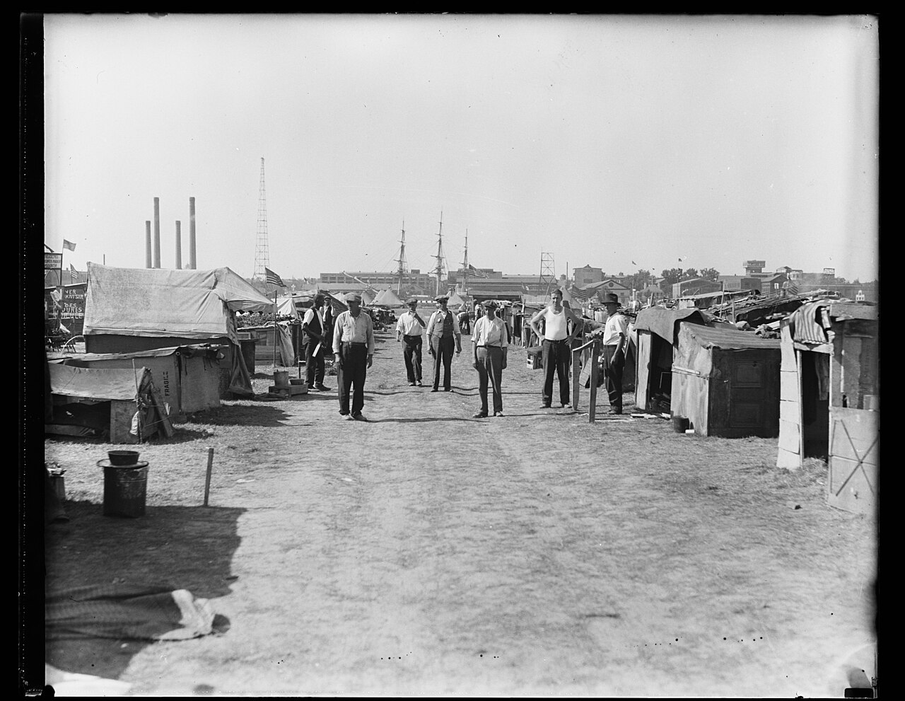

Directions: You are staffing a relief desk in the autumn of 1931, working under President Hoover's program as the lesson reading describes it. Five cases come to your desk. For each case, decide what Hoover's program offered, what it refused, and what happened. Hoover's own statements in this activity are given as summaries of his public positions, prepared for this lesson, and not as transcriptions. At the end, judge the program against the size of the collapse.
Source: Teaching case prepared for this lesson from the relief arrangements described in the reading. The family is a composite, and the case is labeled a teaching case on its face.
A machinist in an industrial city has been out of work for eleven months. His savings are gone. His family of five needs food and rent money now. Under Hoover's program, relief for such a family was the work of local charity and city government, encouraged and coordinated from Washington. The federal government did not pay direct relief to individuals, because the president held that federal relief would weaken character and self reliance and unbalance the budget. The city's relief fund, raised from local taxes and donations, has been spent down as the lines at its office have grown each month.
Process the case. What does the program offer this family, what does it refuse, and who is expected to pay? Name the office that actually faces the family.
The city's fund is nearly empty. Under the rules of the program as described, what happens to this family next, and what assumption of the program has failed?
Source: Teaching case prepared for this lesson, with the photograph of a bank run in Michigan in February 1933. Photographer not credited in the holding record. Wikimedia Commons.

A widow kept $1,800 in a local bank, saved from her late husband's wages. The bank failed after a run, and her deposit is frozen. From January 1932 the Reconstruction Finance Corporation could lend public money to banks, railroads, and insurance companies in the hope that stability at the top would restore jobs below. The corporation lent to institutions, not to depositors, and no federal insurance stood behind her account. Her bank closed before any loan could be arranged, and a closed bank could not be lent back to life.
Process the case. What does the program offer her, directly and indirectly, and what does it refuse?
The RFC's reasoning ran from the top downward. State that reasoning in one sentence, and name the step in it that failed in this case.
Source: Teaching case prepared for this lesson from the farm programs described in the reading. The county is a composite, and the case is labeled a teaching case on its face.
A county on the southern Plains has had almost no rain. Wheat has failed, and farm families cannot repay the loans that bought seed and equipment. The Federal Farm Board, created in 1929, lent money to farm cooperatives so they could hold crops off the market and steady prices. A cooperative loan helps farmers who have a crop to hold and sell later. This county's farmers have no crop. Their need is food, feed for surviving animals, and credit for a season in which nothing grew, and prices for what little they can sell have fallen under deflation to below the cost of production.
Process the case. What does the Farm Board's tool do, and why does it miss this county's need? Answer with the condition of the crop as your evidence.
Name two separate problems the county faces at once, one from the weather and one from prices, using the reading's vocabulary where it fits.
Source: Teaching case prepared for this lesson from the relief record described in the reading, including the Emergency Relief and Construction Act of July 1932.
A city relief office has spent its appropriation by October, with winter coming and its caseload still rising. Charities in the city report the same condition: donations have fallen with incomes. Until the summer of 1932, the federal government's answer was that relief was a local duty, supported by presidential encouragement and coordination. In July 1932 the Emergency Relief and Construction Act authorized the Reconstruction Finance Corporation to lend money to states for relief and to fund more public works. The aid came as loans to states, which had to apply and to repay, and not as grants, and not to cities or families directly.
Process the case. Trace the path any federal money must travel to reach a family in this city, step by step, and mark each point where the path can slow or stop.
This act was Hoover's one step toward federal relief. In what two ways did its design keep it inside the limits of voluntarism even as it crossed the old line?
Source: Photograph by Harris and Ewing of the Bonus Army camp at Anacostia, Washington, 1932, with the record of the bonus as described in the reading. Library of Congress.

A veteran of the First World War, out of work, has come to Washington with thousands of others in the summer of 1932. Congress voted a service bonus in 1924, payable in 1945. The veterans ask that it be paid now, when they need it. The administration opposes early payment as a charge the budget cannot carry and a precedent for paying every claim at once. Congress refuses. Most veterans go home. Those who remain are cleared from their camps on July 28 by federal troops under General Douglas MacArthur, and the Anacostia camp is burned.
Process the case. What does the program offer this veteran, what does it refuse, and what reason does the administration give for the refusal?
The veteran's claim was not charity. Explain the difference between what he was asking for and a relief payment, and say why that difference made the refusal harder for voters to accept.
Complete the desk record. For each case, enter the result in a few words.
| Case | What the program offered | What it refused | What happened |
|---|---|---|---|
| 1. The machinist | |||
| 2. The depositor | |||
| 3. The drought county | |||
| 4. The city office | |||
| 5. The veteran |
Judge the program against the size of the collapse in a short paragraph. Was voluntarism a sound program applied to an emergency too large for it, or a program whose design failed even on its own terms? Defend your judgment with evidence from at least two cases.
What does the program offer, what does it refuse, and who pays? It offers relief through local charity and the city relief fund, encouraged and coordinated from Washington. It refuses direct federal relief to the family. Payment is expected from local taxes and donations. The office that actually faces the family is the city relief office or a local charity, not any federal agency.
What happens when the city fund is empty, and what assumption failed? The family goes without, doubles up, or reaches a breadline, because no level of government above the city has accepted the duty to pay. The failed assumption is that local resources rise with local need. Donations and tax revenue fall as unemployment rises, so the fund is smallest exactly when the caseload is largest.
What does the program offer her, and what does it refuse? Directly, nothing: the RFC lent to institutions, not to depositors, and no federal deposit insurance existed. Indirectly, it offered the hope that RFC lending would keep other banks open. It refused to make her deposit good, and her bank had already closed, beyond the reach of a loan.
State the top down reasoning, and name the step that failed. Lending public money to banks, railroads, and insurance companies would steady those institutions, which would lend and employ again, restoring jobs below. The failed step is the first one in her case: her institution did not survive to be steadied, and a loan program for living banks cannot restore a dead bank's deposits.
What does the Farm Board tool do, and why does it miss this county? It lent to farm cooperatives so they could hold crops off the market and steady prices. The tool presupposes a crop to hold. This county's wheat failed for lack of rain, so there was nothing to store, hold, or sell later, while the family's needs were food, feed, and credit for a season with no harvest.
Name the two problems the county faces at once. Drought destroyed the crop itself, a failure of production. Deflation, a general fall in prices across the economy, cut the price of what little could be sold to below the cost of production while debts stayed fixed in dollars, a failure of the market. Either one alone was survivable in an ordinary year; together they were not.
Trace the path federal money must travel. The state must apply to the Reconstruction Finance Corporation. The corporation must approve a loan. The state receives the money as a debt it must repay and passes it through its own relief machinery to the city, and the city relief office then pays or feeds the family. The path can slow or stop at the application, at the corporation's conditions, at a state already too deep in debt to borrow, and at each office in between, and winter does not wait for any of them.
In what two ways did the act stay inside voluntarism's limits? The money moved as loans rather than grants, preserving the principle that relief was not a federal gift and had to be repaid. It moved to states rather than to cities, charities, or families, preserving the principle that relief remained a local duty with the federal government acting only as a lender behind it.
What does the program offer, what does it refuse, and on what reason? It offers the bonus on its original schedule, payable in 1945, and such relief as local charity anywhere offered. It refuses early payment, on the stated reason that the budget could not carry the charge and that paying one claim early would invite every claim at once. When the veterans stayed after Congress refused, the answer became troops, and the Anacostia camp was burned on July 28, 1932.
Explain the difference between his claim and a relief payment. A relief payment is a gift to a person in need. The bonus was a debt the government already owed him for service already given, voted by Congress in 1924; he was asking to collect his own money early. Voters could accept a government too poor to give. A government using troops against creditors who were also veterans, in the capital, in an election year, read as something else, and the photographs of the burning camp carried that reading across the country.
Desk record, in brief. Case 1: offered local charity and city relief; refused federal direct relief; the fund ran out. Case 2: offered RFC lending to living banks; refused deposit protection; the deposit was lost. Case 3: offered cooperative loans against crops; refused aid where no crop existed; the county faced drought and deflation together. Case 4: offered state relief loans from July 1932; refused grants and direct federal relief; help traveled slowly through indebted states. Case 5: offered payment in 1945; refused early payment; troops cleared the camp. Closing paragraphs earn full credit on either judgment when they argue from the cases. The too large judgment rests on scale, about one worker in four out of work and funds falling as need rose. The design judgment rests on the mismatches inside the cases, tools built for crops that did not exist, loans for banks already dead, and relief that had to be repaid by the governments least able to borrow.